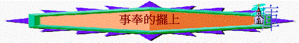

經文：利：６：８－９：
引言：事奉的人和普通人有什麼分別？ 聖經有什麼要求？
我們試從舊約的事奉人－－祭司中，看神對事奉者的更高要求．．．
更多的擺上
～對象：『耶和華曉諭摩西說，你要吩咐亞倫和他的子孫說．．．．』利６：８
～結構：『祭司在獻五祭中的條例』→『祭司在承接聖職的禮儀』
～比較：祭司在替百姓及自已獻祭中的條例及神的要求，似乎比百姓的奉獻更高。
（１）要更深的守望（燔祭）
『耶和華曉諭摩西說：「你要吩咐亞倫和他的子孫說，燔祭的條例乃是這樣：燔祭要放在壇的柴上，從晚上到天亮，壇上的火要常常燒著。』
利６：８－９
『在壇上必有常常燒著的火，不可熄滅。」利６：１３
（２）要更多的擺上（素祭）
＊在時間上
『當亞倫受膏的日子，他和他子孫所要獻給耶和華的供物，就是細麵伊法十分之一，為常獻的素祭：早晨一半，晚上一半。』利６：２０
＊在心思上
『要在鐵鏊上用油調和做成，調勻了，你就拿進來；烤好了分成塊子，獻給耶和華為馨香的素祭。』利６：２１
＊在數量上
『亞倫的子孫中，接續他為受膏的祭司，要把這素祭獻上，要全燒給耶和華。這是永遠的定例。祭司的素祭都要燒了，卻不可吃。』
利６：２２－２３
（３）要更重的承擔（贖罪祭、贖愆祭）
『為贖罪獻這祭的祭司要吃，要在聖處，就是在會幕的院子裡吃。』利６：２６
『祭司中的男丁都可以吃這祭物；要在聖處吃，是至聖的。』利７：６
『這贖罪祭既是至聖的，主又給了你們，為要你們擔當會眾的罪孽，在耶和華面前為他們贖罪，你們為何沒有在聖所吃呢？』利１０：１７
（４）有更好的賞賜（平安祭）
『祭司要把脂油在壇上焚燒，但胸要歸亞倫和他的子孫。你們要從平安祭中把右腿作舉祭，奉給祭司。亞倫子孫中，獻平安祭牲血和脂油的，要得這右腿為分；因為我從以色列人的平安祭中，取了這搖的胸和舉的腿給祭司亞倫和他子孫，作他們從以色列人中所永得的分。』 ７：３１－３４
『獻燔祭的祭司，無論為誰奉獻，要親自得他所獻那燔祭牲的皮。凡在爐中烤的素祭和煎盤中做的，並鐵鏊上做的，都要歸那獻祭的祭司。凡素祭，無論是油調和的是乾的，都要歸亞倫的子孫，大家均分。』７：８－１０
但要分辨
『耶和華對摩西說：你曉諭以色列人說：牛的脂油、綿羊的脂油、山羊的脂油，你們都不可吃。自死的和被野獸撕裂的，那脂油可以做別的使用，只是你們萬不可吃。無論何人吃了獻給耶和華當火祭牲畜的脂油，那人必從民中剪除。在你們一切的住處，無論是雀鳥的血是野獸的血，你們都不可吃。無論是誰吃血，那人必從民中剪除。』 ７：２２－２７
＊但要珍惜
『為感謝獻平安祭牲的肉，要在獻的日子吃，一點不可留到早晨。若所獻的是為還願，或是甘心獻的，必在獻祭的日子吃，所剩下的第二天也可以吃。但所剩下的祭肉，到第三天要用火焚燒；第三天若吃了平安祭的肉，這祭必不蒙悅納，人所獻的也不算為祭，反為可憎嫌的，吃這祭肉的，就必擔當他的罪孽。』７：１５－１８
＊但要相配
『挨了污穢物的肉就不可吃，要用火焚燒。至於平安祭的肉，凡潔淨的人都要吃。』７：１９
ii．在擺上自己上（承接聖職之禮）（８：１－３６）
(1)穿聖衣→在事奉上有更深的認知『摩西帶了亞倫和他兒子來，用水洗了他們。給亞倫穿上內袍，束上腰帶，穿上外袍，又加上以弗得，用其上巧工織的帶子把以弗得繫在他身上，又給他戴上胸牌，把烏陵和土明放在胸牌內，把冠冕戴在他頭上，在冠冕的前面釘上金牌，就是聖冠，都是照耶和華所吩咐摩西的。』８：６－９
『摩西用膏油抹帳幕和其中所有的，使他成聖；又用膏油在壇上彈了七次，又抹了壇和壇的一切器皿，並洗濯盆和盆座，使他成聖；又把膏油倒在亞倫的頭上膏他，使他成聖。』８：１０－１２
＊無論事奉者和事奉者環境也要成聖！
『他牽了贖罪祭的公牛來，亞倫和他兒子按手在贖罪祭公牛的頭上。』８：１４
『又取臟上所有的脂油和肝上的網子，並兩個腰子與腰子上的脂油，都燒在壇上；惟有公牛，連皮帶肉並糞，用火燒在營外，都是照耶和華所吩咐摩西的。』８：１６－１７
『你們七天不可出會幕的門，等到你們承接聖職的日子滿了，因為主叫你們七天承接聖職。像今天所行的都是耶和華吩咐行的，為你們贖罪。』８：３３－３４
(5)能承接聖職之禮的羊→在歸神上要更多的投入
＊同平安祭與（甘心祭／感謝祭）相似，但所作、所獻的似乎多，更投入。
（ａ）全人的歸神
『就宰了羊。摩西把些血抹在亞倫的右耳垂上和右手的大拇指上，並右腳的大拇指上。』８：２３
（ｂ）更多的甘心（感謝）
『再從耶和華面前、盛無酵餅的筐子裡取出一個無酵餅，一個油餅，一個薄餅，都放在脂油和右腿上，把這一切放在亞倫的手上和他兒子的手上作搖祭，在耶和華面前搖一搖。摩西從他們的手上拿下來，燒在壇上的燔祭上，都是為承接聖職獻給耶和華馨香的火祭。』８：２６－２８
iii．在朝見真神上（９）
『摩西說：「這是耶和華吩咐你們所當行的；耶和華的榮光就要向你們顯現。』９：６
（１）額外的擺上
『他奉上百姓的供物，把那給百姓作贖罪祭的公山羊宰了，為罪獻上，和先獻的一樣；也奉上燔祭，照例而獻。他又奉上素祭，從其中取一滿把，燒在壇上；這是在早晨的燔祭以外。』９：１５－１７
（２）整全的奉獻
『對亞倫說：「你當取牛群中的一隻公牛犢作贖罪祭，一隻公綿羊作燔祭，都要沒有殘疾的，獻在耶和華面前。你也要對以色列人說：『你們當取一隻公山羊作贖罪祭，又取一隻牛犢和一隻綿羊羔，都要一歲、沒有殘疾的，作燔祭，又取一隻公牛，一隻公綿羊作平安祭，獻在耶和華面前，並取調油的素祭，因為今天耶和華要向你們顯現。於是他們把摩西所吩咐的，帶到會幕前；全會眾都近前來，站在耶和華面前。』９：２－５
～結果：神悅納
『有火從耶和華面前出來，在壇上燒盡燔祭和脂油；眾民一見，就都歡呼，俯伏在地。』９：２４
思想：你在事奉上，奉獻上，生活上是否有更多的擺上？
有沒有一些仍保留的？ 為什麼？